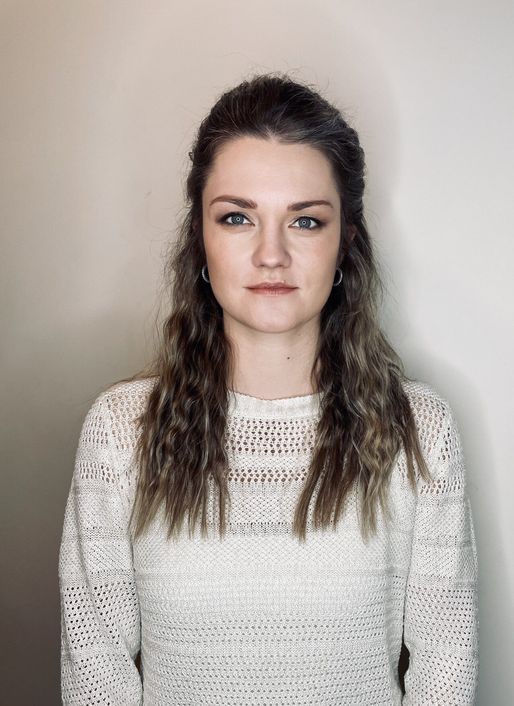

Laura Ieviņa

Summary
I am a dedicated and hardworking individual with experience primarily in the restaurant industry. I possess
strong problem-solving, leadership, and communication skills.
Over the past few years, I have been a stay-at-home mom, during which I have gained a deeper understanding of
the IT field.
Currently, I am actively pursuing web development, and I am growing to love it.
Education
- University of Latvia - Faculty of Economics and Management
- Bachelor's degree in Management Science: Tourism and Hotel Management
- 2009 – 2013
- Riga Hansa Secondary School
- Secondary Education
- 1997 – 2009
Additional Training and Certifications:
Riga Technical University
-
- Introduction to Website Development. Programming Basics (Front-end and Back-end)
- June 2023 - August 2023
- College of Accounting and Finance (ESF)
- Fundamentals of Management
- 2011
Work experience
- KOYA LLC Restaurant "KOYA"
- Hall Manager / Assistant Restaurant Manager
- April 2018 – February 2021
- Cantus Group LLC - Sk6 LLC Restaurant "MUUSU"
- Hall Manager / Assistant Restaurant Manager
- September 2015 – April 2018
- Cantus Group LLC - Antonijas 13 LLC Restaurant "MUUSU"
- Hall Manager
- August 2014 - September 2015
Skills
Hard Skills:
- HTML, CSS, Javascript
- PHP, MySQL
- Python
- Microsoft Office
Soft Skills:
- Problem Solving
- Communication
- Teamwork
- Time management
- Leadership
- Adaptability
Languages
- Latvian – Native
- English – C2
- Russian – B1